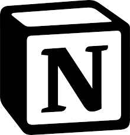

About Team
Review
Gallery
Algorithm
챌린지 후기를 확인해보세요!
Review
탭에서 다른 팀원의 후기도 보실 수 있습니다.
박하영
박고은
이화준
김주영
강별하
최고가 되고자 하는 완벽주의는 어디에서 기인하는가? 이상하고 뜬구름 잡는 소리처럼 들릴지는 모르겠지만, 내가 이번 하이스쿨 알고리즘 캠프를 진행하며 떠올린 생각이다. 나는 꾸준히 완벽주의를 이상(理想)한다. 강박과도 같은 기이한 신념은 곧이어 내 인생의 목표를 '성공'으로 잡았다. 덕분에 내가 하고 싶었던 일을 등지고 새롭고 완벽하며 내가 정해둔 성공이라는 틀에 가장 부합했던 개발을 시작하게 되었다. 나는 1학년부터 2학년 때까지 항상 최고가 되고자 노력했다. 옥도 갈아야 빛이 난다고, 고생하면서 개발 능력 성장을 위해 노력하니 성취감이 생겼고, 늘 개발하는 생각만 하면 설레고 떨렸다. 그러나 제일 이상적이라고 생각했던 인생 계획이 차츰 무너지자, 나는 미래에 대한 가벼운 우울감을 느꼈다. 고등학생에게 개발자는 무리일지도 모른다는 생각에 덜컥 겁이 났다. 내 주변 친구들은 모두 대학교 입시를 준비하고 있다 보니, 불안은 이때다 싶어 점점 몸집을 불려 가 끝에는 나까지 집어삼키고 있었다. 하지만 불안과 우울에 그대로 잠식당하기엔 나는 여전히 지일가기(指日可期) 정신으로 내 가능성을 믿고 있었다. 믿음 끝에는 성과가 따라오기 마련이라고, 2학년 담임 선생님이 전근 가시기 전, 공지방에 올려주신 디지털 새싹이 내 뇌리를 스쳐 지나갔다. 최고가 되고자 하는 완벽주의를 이상(理想)하기 때문에, 계획은 나의 모든 것이라고 해도 과언이 아니다. 그래서 생각했다. 지금 나에게 가장 중요한 것은 무엇인가? 성취감이었다. 아주 작은 것부터 다시 쌓아야 했다. 공든 탑이 어찌 무너지랴. 그렇게 나는 무너졌던 인생 계획을 다시 복구시키고자 하이스쿨 알고리즘 캠프에 참여하게 되었다. 고등학교 1학년 때 이미 Python을 경험해본 터라 온라인 하이스쿨 챌린지는 금방 끝낼 수 있었다. 설레는 마음으로 일주일 전부터 팀 챌린지 당일의 계획을 전부 세워두고 Python을 공부했다. 더군다나 알고리즘은 이미 1학년 때 Java로는 고급 알고리즘까지, Python으로는 중급 알고리즘까지 해본 경험이 있어서 은근히 자신만만했다. 어쩌면 나보다 코딩 실력이 낮은 친구들을 만날 것 같다는 오만(傲慢)에 빠져 자만(自慢)했던 것 같다. 그러나 캠프에 참여하게 되었을 때, 내 오만은 산산조각이 났다. 인간은 사회적 동물이라고 누군가 말하지 않았던가. 보이지 않았기에 믿지 않았고, 들리지 않았기에 믿지 못했다. 그러나 내 눈앞에 100여 명의 사람이 저마다 자신의 개발 실력을 말하고 있을 때 보였고, 들렸다. 그래서 믿을 수밖에 없었다. 나는 사실 이렇다 할 성과가 없어 한없이 부끄럽기만 했다. 내가 떳떳이 고개를 들지 못함에도 불구하고 나를 선택해준 팀원들을 이끌고 '폼미쳤다'라는 팀을 만들게 되었다. 개발 실력이 한참 부족함에도 팀장이 된 것은 사실 굉장히 떳떳하지 못한 행위였다. 그것은 일종의 때아닌 신파극(新派劇) 같았다. 그러나 팀원들은 내게 할 수 있다고 복돋아주었고, 잘 해야만 한다는 갑갑한 완벽주의의 틀에서 잠시나마 벗어날 수 있게 해주었다. 어찌됐건 팀원들은 챌린지에 참여했다는 사실만으로도 만족하는 것 같아 보였다. 좋은 건 좋은 거다 라는 말처럼 비록 대상은 못 탔으나, 이 캠프 자체가 내 인생을 굴러가게 해줄 기름을 넣은 것 같아서 좋았다. 그리고 캠프의 경험담에서 구름의 관계자 분들을 말하지 않을래야 안 할 수가 없다! 챌린지다 뭐다를 전부 떠나 너무 친절하시고 상냥하셨다. 차갑고 바쁘게 돌아가는 사회에서 몽실몽실한 구름처럼 부드럽고 따뜻한 느낌을 받을 수 있었다. 다시 만나뵐 수만 있다면 사원증을 목에 걸고 다시 만나뵙고 싶을 정도로 마음에 들었다. 비비도 웨인도(브루스 웨인인줄) 모두 너무너무 감사하다. 이 캠프가 내 인생의 터닝포인트가 될 수도 있을 것 같다. 또, 이번 캠프 경험을 통해 깨달은 것을 말해보고자 한다. 사실 한마디로 정리해볼 수 있다. 이상에 무수히 충돌했고, 현실을 겸허히 수용했다. 내 연령대에 나보다 개발 실력이 좋은 사람이 있다는 사실은 너무나도 당연한 이이기지만, 나는 자괴감에 빠질 것이라는 이유만으로 철저히 무시했다. 그러나 더는 무너질 것도 없는 벼랑 끝에서 제 한 몸 바쳐서 떨어질 수 있을 것 같다는 생각이 들었다. '아주 밑바닥부터 시작해야겠다', 나는 그렇게 생각했다. 터를 닦아야 집을 짓는다는 말처럼 나는 최고가 되고자 하는 완벽주의를 이상하기 때문이다. 이쯤에서 서론에 대두된 말을 떠올려보자. 난 최고가 되고자 하는 나의 완벽주의는 어디서 기인하는지 알고 싶었다. 그러나 사실 의미가 없어졌다. 앞서 말했듯, 이상에 무수히 충돌했고, 현실을 겸허히 수용했기 때문이다. 다소 비겁한 선택지일지는 몰라도 내 최선의 선택지라고 생각한다. 조금은 무뎌진 채로 살아도 된다는 것을 깨달았으니, 실수가 잦더라도 해보려고 한다. 내 실력을 알고자 도전한 챌린지에서 실패와 깨달음을 얻었고 오만과 완벽주의를 잃었다. 취득과 박탈을 경험한지 얼마 되지 않았으나, 내 인생이 조금씩 변화할 것임은 확실히 느껴진다. 못해도 좋으니 다양한 해커톤과 공모전을 나가볼 것이며, 다양한 강의를 들으러 갈 것이다. 그렇게 천천히 성장해서, 여름방학 때 또다시 구름에서 만났으면 좋겠다.
4,636자 (6,438byte)
어렸을 때부터 컴퓨터 그 자체와 코딩 분야에 굉장한 관심이 많았습니다. 많은 성장을 이뤄내지는 못했지만 정말 오랜 기간 동안 이에 대해 촘촘한 공부를 해왔습니다. 코딩 공부를 더 제대로 전문적으로 해보고 싶고 많은 경험을 하고 싶어 IT 관련 유명 고등학교에 진학했지만, 주변에서는 ‘고등학생’의 신분으로 해야 할 것들을 미리 정해놓은 어른들이 너무나도 많았습니다. 괜히 저는 지금까지 하지 않았던 것들에 대해 조급해졌고 코딩을 소홀히 했습니다. 10년 가까이 꿈꿔온 꿈이 무너지는 기분에 마음 속 갈등이 너무나도 심하던 시점, 저는 내면의 환기가 필요했고, 앞으로의 제 방향성에 대한 동기부여가 너무나도 절실했습니다. 그 때 제 나이로도 신청이 가능한 코딩 캠프가 눈에 띄었고 그것이 ‘하이스쿨 알고리즘 캠프’였습니다. 다른 캠프였다면 이렇게까지 갈등이 심하지는 않았을 것 같습니다. 그러나 갈등이 심했습니다. 저는 알고리즘을 공부한지는 얼마 되지 않았으나 정말 너무나도 좋아했습니다. 딱 이번 한 번만이라며 저는 제 주변에게 둘러대고 그렇게 캠프에 지원하고, 테크노밸리에 ‘코딩하기 위해’ 가보는 짜릿한 기회를 갖게 됐습니다. 사실 가장 크게 경험한 것을 말하자면, 코딩테스트와 비슷한 문제들을 직접 현장에서 시간을 재고 풀어보는 경험이 정말 좋았습니다. 또 손코딩으로 알고리즘 문제들을 제대로 설계해 본 경험이 굉장히 적은데, 손코딩으로 설계하는 경험이 굉장히 이색적이였고 힘들었지만 신선했습니다. 지금까지 참여했던 대회나 캠프들은 모두 학교의 친구들과 참여했었는데, 처음 만난 팀원들과 서로를 소개하고 친해지는 시간을 가지는 것 경험이 처음이었고 이도 생각보다 어렵지 않다는 것을 알게 되었습니다. 알고리즘 실력이 너무나도 저해돼서 한 학년 동안 코딩 공부를 아예 하지 않은 것에 대한 후회를 깊게 했습니다. 한 학년을 다른 공부들을 하며 알차게 보내긴 했으나 가장 잘하고 싶은 분야에 대한 감을 잃은 것 같아 굉장히 속상했고, 앞으로는 다른 일들로 바쁘더라도 코딩 공부를 꾸준히 놓지 않아야겠다는 생각이 강력하게 들었습니다. 또, 코딩을 잘하는 친구들이 생각보다 많은 지역에 굉장히 많이 분포되어있다는 생각을 했습니다. 저희 학교도 IT특성화 학교로 굉장히 유명한 학교라 코딩 잘하는 친구들이 많은데, 학교 밖에도 굉장히 많아서 동기부여를 많이 받았습니다. 여기서 멈춰있으면 안되겠다는 생각을 많이 했습니다.
1,948자 (2,819byte)

Notion 바로가기
처음으로 인스타그램을 통해 이 하이스쿨 알고리즘 캠프를 알게 되었습니다. 그 전에 제가 해본 것은 메카트로닉스 분야의 PLC를 다뤄본 것이 전부였고 늘 파이 썬, C, 자바, 코딩 이렇게 단어만 들었을 때는 친근하고 굉장히 근접해있는 것 같지만, 막상 코딩을 배우려고 했을 때는 어디서, 무엇을, 어떻게 해야 할지 잘 몰랐는데 이 캠프 인원 모집 공고를 봤을 때 “심심하고 지루하고 의미 없는 방학을 조금이나마 나 자신도 성장할 수 있고 길고도 긴 방학을 ‘시간 낭비’ 라고 쓰이지 않게 노력해야겠다.” 라고 생각을 하였고 이에 지원하게 되었습니다. 이 캠프에 지원하고 온라인 과제를 해결하라는 문자에 저는 신이 났습니다. 제가 이 캠프에 들어온 것으로 조금이라도 제 코딩의 발 받침이 되는 듯했습니다. 하나 제 눈앞에 보인 것은 영어와 숫자로 이루어진 알록달록한 숫자들이었고 유튜브나 기타 매체들에서 보기만 했던 것들이 눈앞에 보이고 이 문제들을 해결하기에는 가장 아래 단계도 해결하기 많이 어려웠습니다. 그러나 이 어려움은 저의 성장의 디딤돌이 되었고 Q&A에 질문하여 선생님들이 답변해주신 것들은 제가 성장하는 데 있어서 성장촉진제와 같은 역할을 해주셨습니다. 그리고 실제 판교에서 진행하는 활동에서 팀빌딩을 하고 맺어진 팀원들은 “못해도 괜찮다”라며 격려와 제가 담당할 수 있는 것들을 분담해주어 제가 팀에서 도움이 될 수 있게 도와주었고 동시에 많은 용어와 문법을 알게 되었고 문제를 풀 수 있었습니다. 이런 것이 팀워크라고 생각하였고, 대회 중에는 대회장의 떨리는 공기와 치열한 경쟁 속에서 저는 저의 역할을 다 할 수 있었고 더불어 제가 평상시에는 못했던 문제들을 해석할 수 있었고 이는 대회 중 저 자신에게 꽤 큰 자신감을 줌과 동시에 무사히 대회를 마칠 수 있게 되었습니다. 끝나고 나서는 저를 최대한 빛나게 만들어준 팀원들에게 매우 고마웠고 동시에 제 마음속에서는 다음에 이 캠프에 다시 한번 참가할 기회가 생긴다면 그때까지 제 코딩실력을 키워서 다음에 팀이 될 팀메이트중 저와 같은 초심자가 있을 때 최대한 빛날 수 있게 만들어 주고 싶다는 생각이 들었습니다. 마무리하고 집에 갈 때에는 우리 팀 다른 팀 나무랄 것 없이 모두가 행복하게, 웃으며 마무리하는 것을 보고 많은 것을 느끼게 되었습니다. 온라인 과제를 풀면서 Q&A의 첫 질문은 굉장히 떨렸는데 그 후에 질문하면서 서서히 긴장을 풀며 ‘모르는 것에 질문을 하지 않는 것’은 ‘성장을 방해하는 것’ 이라고 생각이 들 만큼 모르는것에 스스럼없이 질문을 할 수 있게 되었고, 1 일차 수업을 들으며 DFS와 BFS에 대해 배웠을 때에는 일상 속의 예시로 쉽게 쉽게 설명, 이해가 되는 것을 보고 코딩이 우리의 일상 속에 녹아있는 게 맞다고 생각하며, 나도 역시 코딩을 하여 일상의 편의를 더하고, 앞으로 더욱더 나은 내일을 만들 수 있다고 생각했습니다. 2일 차 때에는 팀멤버들끼리 모여서 카페에서 파이썬을 공부하고 복습했으며 이때 협력하며 서로 발전할 수 있다는 생각을 했습니다. 확실한 건, 못하더라도 못하는 범위에서 최대한 노력할 수 있어야 한다고 생각했고 이를 실천 할 수 있는 계기가 되었습니다. 이 캠프를 마무리하면서 제가 코딩을 접하지 않기도 했지만, 어렵긴 해도 이 캠프를 통해 결코 복잡하고 이해하기 어려운 것이 아니라고 생각하게 되었습니다. 대회가 끝나고 저는 참여 소감을 참가자분들 앞에서 얘기 할 때 다음에 만약 참여하게 된다면 지금보다는 더 잘하고, 제가 팀리더가 되어 다른 사람을 도울 수 있는 위치가 되었으면 좋겠다고 말했습니다. 마음에서 우러나온 이 말을 이행할 예정이며, 가능하다면 우리 학교의 시스템을 이용하여 파이썬과 하드웨어를 연동하여 실전 경력을 채우고, 자기계발 할 예정입니다.
3,007자 (4,328byte)
캠프를 참가한 이유는 부모님의 권유도 있었지만 내가 코딩의 대한 흥미가 있어서 신청했다. 그리고 내가 소프트웨어나 코딩에 좀 관심에 있는 것도 포함이다. 또 나의 진로에 도움이 되고 진로에 관련된 수업이어서 더 관심이 있었다. 이번 캠프에서 코딩을 잘하는 애들이 많다는 것을 느꼈고 이번에 코딩으로 DFS와 BFS를 배웠는데 상당히 어려웠었다. 그리고 팀을 만드는 것이 좀 어려웠지만 만들고 같이해서 좋았다. 질문 시간에 여러 질문들을 봤는데 선생님 백준 티어 어디냐고 했을때 다이아라고 했던 것이 놀라웠다. 또 팀을 만들고 난 뒤 저녁에 같이 만나서 코딩 공부도 하고 도와준 것이 인상적이고 좋았다. 그리고 다음날에 다들 카페에 모여서 어제와 같이 대회 준비도 하며 모르는 것을 알려주는 것이 좋았다. 이번 캠프에서 깨달은 것은 팀워크가 있으면 다같이 어려운 코딩도 좀 할 수 있단 것을 알았고, 이렇게 코딩을 열심히 해서 개발자가 돼서 대기업에서 편히 일할수 있다는 것이다. 그리고 친구들과 이번 대회를 위해 연습하고 노력해서 이기려는 의지가 있는 팀워크가 있다는 것을 알았다. 그리고 앞으로 내 삶에 코딩의 대한의지와 노력을 적용할 생각이다.
893자 (1,309byte)